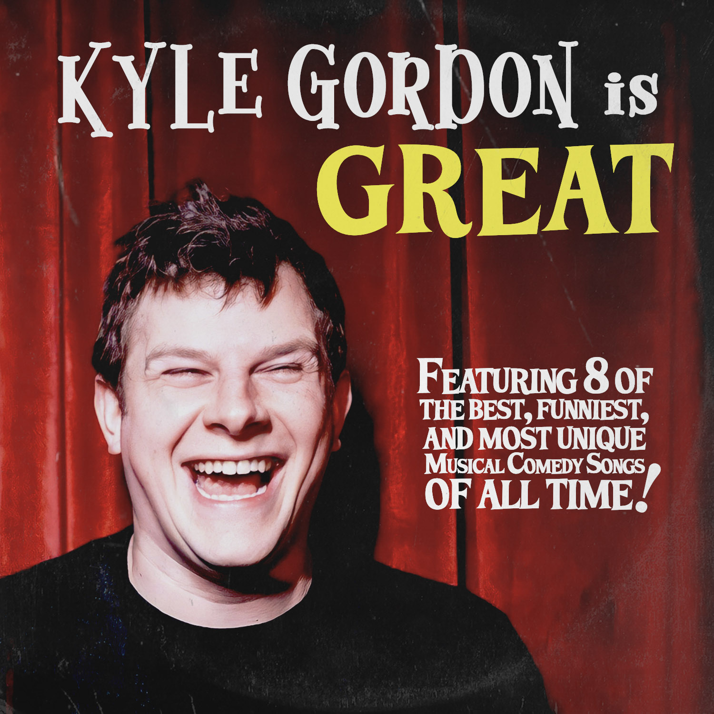
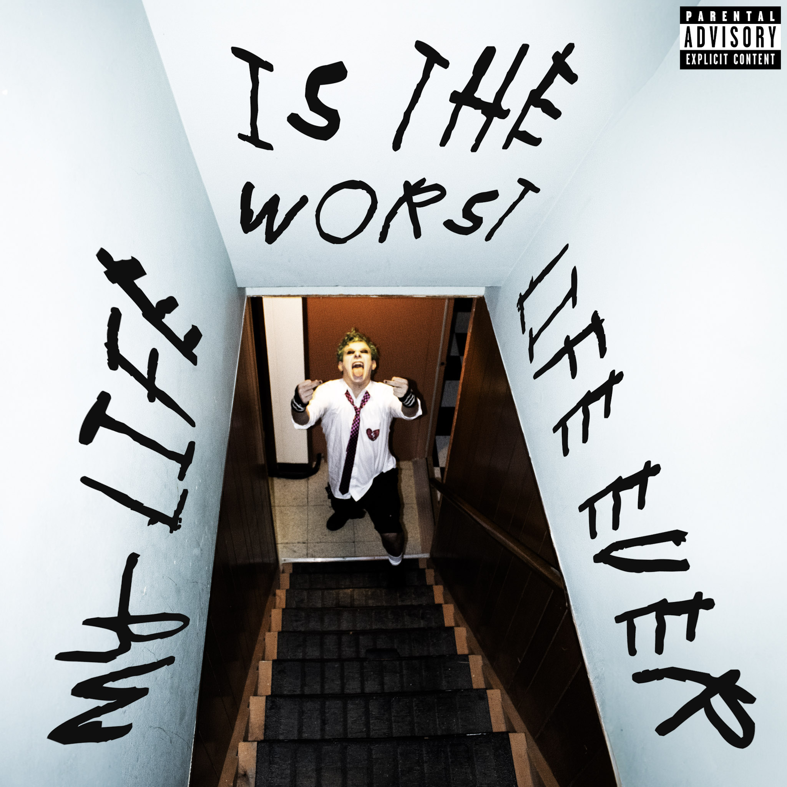

33.jpg

planet_of_the_bass.jpg

diamonds.jpg

kyle_gordon_is_great.jpg

my_life_is_the_worst_life_ever.jpg

caprisongs_listening_party.jpg
about_me.txt
Stephen Lutz (a.k.a. SLUTZ) is a DJ and graphic designer based in Manhattan. His work bridges sound and visuals through album covers, brand design, and curated DJ sets. He has collaborated with artists like Michaela Jaé and Kyle Gordon, delivering polished creative that stands out across digital and live experiences. Available for design projects and live bookings.
contact.txt
email: stephen@lutz.gay